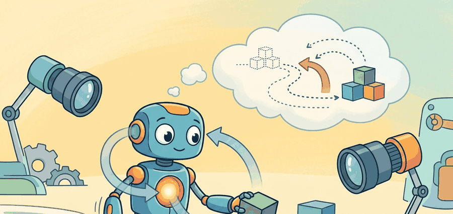

"Interactivity is a stronger test than next-frame quality: every extra action reveals whether the world model preserved causal state or only visual momentum."
A World That Responds To You

By the end of this section you should be able to explain why interactive controllability, not visual fidelity, is the benchmark that decides whether a generated world is a usable training environment, and trace how the Genie lineage tightens that control loop. A world model here means a learned generative model that predicts the next observation given past observations and an action, so an agent can plan or train inside it instead of inside hand-coded physics. Imagine pressing "left" in a video-game level that no human ever designed, one conjured on demand from a single screenshot. If the character actually moves left on step forty-seven just as reliably as on step one, you have something genuinely new: a world model that a robot or reinforcement learning (RL) agent can train inside without a single line of hand-authored environment code. The Genie series, from latent-action tokens learned off silent YouTube platformers all the way to photorealistic real-time exploration in Genie 3, is the clearest proof as of 2025 that this is achievable. Understanding its design choices tells you exactly what still breaks, and why interactive fidelity is the benchmark that separates useful world models from expensive screensavers.
Read this section as a lineage. Genie begins with learned latent actions from video, expands into large-scale interactive world generation in Genie 2, and then moves toward photorealistic real-time exploration in Genie 3 and Project Genie.
Interactivity is a stronger test than next-frame quality. Every extra action exposes whether the world model actually preserved causal state or only short-term visual momentum.
A common assumption is that a world model producing photorealistic frames is a useful training environment for embodied agents. That assumption is wrong. Visual realism and interactive controllability are independent properties. A generative model can produce indistinguishable successor frames while ignoring the agent's action entirely. Every policy trained inside such a model learns to exploit visual statistics rather than causal structure. In embodied AI, the action input must be a true cause of the next state, not a cosmetic conditioning signal. The only way to verify this is to measure whether the same action produces reliably different outcomes across many steps, not to evaluate frame quality with a perceptual metric.
Problem First
Many video models can continue a clip, but a world model for embodied AI must do something stricter: respond to the user's or agent's actions while keeping the environment coherent. As Figure 39.2A frames it, a predicted future is valuable only if it changes action selection and survives contact with reality. Genie matters because it frames interactivity, not only fidelity, as the main benchmark for progress.
Core Model
The early Genie formulation learns a latent action interface from unlabeled videos: $$p(o_{t+1} \mid o_{\le t}, u_t),$$ where $u_t$ is a learned latent action that stands in for the unknown control responsible for the next frame. This is powerful because internet videos rarely come with button presses or motor torques attached.
For embodied AI, this matters because physical robots cannot wait for curated, labeled datasets. A manipulation arm learning from kitchen videos or a mobile robot learning from YouTube walkthroughs must extract controllable structure from observations alone. Without a latent action interface, the model has no variable a downstream policy can steer, so the generated world becomes a passive replay rather than a training environment.
Mechanically, Genie 1 trains a vector-quantized tokenizer that compresses consecutive frame pairs into one of eight discrete codes. A transformer then predicts the next frame conditioned on the code. The codebook is kept small deliberately: with only eight slots, the quantizer cannot absorb appearance variation and is forced to capture the dominant causal axes instead, such as moving left, jumping, or standing still.
Before reading on, guess: how many seconds can Genie 2 sustain a coherent, playable 3D scene before visual drift becomes significant enough to undermine agent training?
Later systems move toward explicit or user-facing interactivity. Genie 2 is presented by Google DeepMind as a large-scale foundation world model for diverse 3D environments, while Genie 3 is described as a general-purpose interactive world model capable of generating photorealistic environments that can be explored in real time. The conceptual progression is from inferred latent control to more explicit, controllable world simulation.
Consider the progression concretely. Genie 1 (2024, Edwards et al.) trains on roughly 200,000 hours of 2D platformer video with no action labels; its latent action tokenizer compresses each frame transition into one of eight discrete codes, and a downstream policy can steer a new environment using only those codes. That bottleneck does real work: with only eight slots, the policy search space collapses enough that a downstream agent can discover coherent navigation behavior in roughly 300 rollouts, whereas without the bottleneck the same agent would need tens of thousands of labeled episodes to isolate the same causal axes from raw pixel variation. Genie 2 scales to diverse 3D environments using a diffusion-based video model conditioned on both latent actions and text, and it can sustain coherent scenes for around 20 seconds of continuous interaction before visual drift becomes significant. Genie 3 targets real-time photorealism, reporting the ability to generate and explore environments at interactive frame rates from a single image prompt, with the explicit action interface accepting natural-language or joystick input. Each generation tightens the control loop: the latent-code bottleneck of Genie 1 becomes an explicit semantic interface in Genie 3.
When replicating Genie 1's latent-action tokenizer on a new video dataset, resist the temptation to raise the codebook size beyond eight. The original paper deliberately uses a small codebook so the vector-quantized bottleneck is forced to capture independent causal axes rather than absorbing appearance variation. Increasing the codebook to 32 or 64 codes typically causes the tokenizer to partition visual texture instead of control structure, producing codes that look informative but do not transfer to downstream policy learning. Start at eight codes, verify that each code consistently corresponds to a distinct motion pattern across held-out clips, and only expand if those eight codes provably fail to cover the action space your domain requires.
The important scientific point is that interactivity is a much stronger demand than next-frame prediction. A pure video-continuation model needs only to fool the eye on frame 2; an interactive world model must still respond correctly on frame 200, after 199 action-conditioned transitions have compounded any drift. The model must preserve state variables over many steps, respond causally to actions, and avoid drifting into visually plausible but unplayable nonsense. In a practical benchmark, that means replaying the same action script through Genie-like systems, Project Genie interfaces, or other interactive generators and checking whether later states still encode the same intended control semantics, uncertainty, and controllability objective.
Another way to say this formally is that the state-space dynamics induced by the generator should preserve the policy-relevant variables over horizon, not only the pixels. If the uncertainty over latent action consequences grows faster than the useful horizon, the interactive world stops being a trustworthy training environment.
Think of navigating a city using a hand-drawn copy of a map someone described to you from memory. On the first few turns the directions hold up fine, but each time you round a corner the copyist's small errors compound: a street that was "roughly two blocks" becomes ambiguous, a landmark placed "near the park" could be on either side. After ten intersections you are steering by a map that no longer matches the territory. A world model with drifting latent-action semantics works the same way: the first few action-consequence pairs feel correct, but each step accumulates uncertainty about what the next command actually means, until the simulated world and any policy trained inside it diverge from reality entirely.
A world model that produces gorgeous frames but ignores your actions is, in essence, a very expensive screensaver. The Genie line insists on the unglamorous property that pressing "left" should actually mean left, even on step forty-seven.
Initialize the world from a prompt or context frame, apply an action sequence, render the resulting trajectory, then check whether the state transition pattern matches the intended action semantics over many steps rather than only the first step.
Minimal Probe
The tiny evaluation loop below mirrors what makes the Genie family interesting: repeated action following. It accumulates a score across multiple steps, because single-step obedience is much easier than long-horizon interactive consistency.
# Score whether an interactive world follows actions over time.
# A few good first steps do not rescue long-horizon drift.
intended = ["left", "left", "jump", "right"]
observed = ["left", "left", "jump", "idle"]
step_scores = [int(i == o) for i, o in zip(intended, observed)]
action_follow_rate = sum(step_scores) / len(step_scores)
print({"step_scores": step_scores, "action_follow_rate": round(action_follow_rate, 2)}){'step_scores': [1, 1, 1, 0], 'action_follow_rate': 0.75}
Expected behavior: The sequence shows why interactive evaluation is sequential. The world followed the first three actions correctly and then drifted on the last step. A polished screenshot from the first frame would miss the exact failure that matters for agent training.
There is no fully open one-line Genie SDK for all versions, so the practical shortcut is conceptual rather than purely programmatic: use the official Project Genie or Google DeepMind materials to define the interaction contract, then wrap that contract inside your own benchmark harness. The maintained tool handles generation; your code should handle action scripts, scoring, replay storage, and if needed token-level analysis with PyTorch, JAX, and standard transformer tooling.
Practical Recipe
- Evaluate with action scripts, not free-form visual inspection.
- Report how performance decays with horizon, because many interactive models fail gradually.
- Separate prompt diversity from control fidelity; a model can be creative and still be a weak simulator.
- Keep latent-action systems and explicit-action systems in distinct tables so readers do not confuse the control interfaces.
A generated world that follows the first few commands well can still become unusable when horizons extend. Early-step success should not be mistaken for a stable interactive simulator.
A warehouse-navigation agent trained in an interactive generated world may learn useful avoidance behavior if doors, shelves, and people remain persistent under actions. If the world reinterprets the same joystick command differently from one step to the next, the resulting policy learns to exploit generative quirks rather than real navigation structure.
Direction 1: Grounding latent actions in multimodal robot signals. Genie-style tokenizers trained on RGB video cannot represent contact or force events. Active 2024-2025 work grounds latent actions in proprioceptive and tactile streams alongside pixels; representative work is UniSim (Yang et al., 2024, Google DeepMind), which conditions a neural world model on action embeddings derived from real robot trajectories including wrist-force data, enabling policies trained in simulation to transfer directly to a Franka arm.
Direction 2: Language-conditioned interactive world models with long-horizon coherence. Genie 2 and Genie 3 drift in controllable scene identity after roughly 20 seconds. Current research addresses this with persistent memory tokens or explicit object-centric representations; GameNGen (Valevski et al., 2024, Google) demonstrates a diffusion-based world model running Doom at 20 FPS with stable identity over hundreds of steps by conditioning each frame on a compact learned game-state encoding rather than raw frame history alone.
Direction 3: World models as policy-training substrates without environment code. DIAMOND (Alonso et al., 2024, University of Geneva) trains a diffusion world model entirely from offline play data and then trains reinforcement learning (RL) agents inside it, reaching competitive Atari scores with no simulator access. This closes the loop from passive video to deployable policy and is the current frontier for applying Genie-style generation to real robot learning without hand-authored physics engines.
Open problem for PhD students: Long-horizon action-consequence consistency in egocentric robot video. Genie-class models can sustain 20-second playable episodes in synthetic 3D scenes, but egocentric robot video (wrist cameras, head-mounted RGB-D) introduces lens distortion, rapid viewpoint change, and partial observability that break identity preservation much sooner. A tractable open problem is designing a latent-state bottleneck that separately encodes scene geometry (slowly changing) and agent pose (rapidly changing) so that a learned world model can roll out 200-step manipulation trajectories without object-identity swap. No published system solves this for real wrist-camera data as of mid-2026.
For action-conditioned video as a policy-learning substrate, connect this section to Chapter 22. For simulation and benchmark concerns, revisit Chapter 12. For the broader world-model taxonomy, compare with Section 39.4 on Cosmos.
The Genie line matters because it makes a missing assumption visible. Much of classic video prediction quietly assumes the action stream is known. Internet video does not provide that. By learning or inferring a control interface, Genie opens a path from passive observation datasets toward interactive world models, while Project Genie and later Google DeepMind demos expose how that interface behaves under repeated user control, replay monitoring, and success-rate style evaluation.
That does not mean the problem is solved. The more interactive a generated world becomes, the more it exposes its weaknesses: state drift, identity swaps, and ambiguous control semantics. In this sense, interactivity is not only a capability showcase. It is a stronger microscope for world-model failure.
Project Ideas
Beginner (weekend): Latent-action consistency tester in Gymnasium. Build a harness that wraps a Gymnasium environment (e.g., CartPole or LunarLander), records frame-pair transitions, and fits a small Vector-Quantized Variational Autoencoder (VQ-VAE) with an 8-code codebook to learn latent actions from pixel observations alone. The key challenge is verifying that each discrete code consistently corresponds to one motion direction rather than absorbing visual texture variation, which you check by replaying fixed code sequences and measuring action-follow rate over 50 steps.
Intermediate (1-2 weeks): Interactive world model for a PyBullet manipulation task. Train a small video-prediction transformer on recorded RGB trajectories from a PyBullet robotic arm, condition it on Genie-style latent action tokens, and evaluate whether a policy trained entirely inside the generated world transfers to the real PyBullet simulator. The key challenge is measuring and bounding state drift: the generated world must keep door and object identity stable across at least 20 consecutive action-conditioned steps before the learned policy can exploit any useful causal structure.
Can you explain the difference between a latent-action world model trained from raw video and an interactive world model exposed directly to user or agent commands?
The real advance in the Genie family is not prettier video but stronger interactivity, because a world model that cannot be steered cannot train or evaluate agents reliably.
Design a benchmark script for an interactive world model with four fixed action sequences. Which metrics would tell you whether the environment is merely reactive at one step or genuinely coherent over time?
Bibliography & Further Reading
Primary References And Tools
Edwards, A. et al.. "Genie: Generative Interactive Environments." (2024). https://arxiv.org/abs/2402.15391
The original Genie paper introduces latent actions learned from video and frames the interactive-environment problem clearly.
Google DeepMind. "Genie 2: A Large-Scale Foundation World Model." (2024). https://deepmind.google/blog/genie-2-a-large-scale-foundation-world-model/
Genie 2 is the official source for the large-scale 3D environment direction.
Google DeepMind. "Genie 3: A New Frontier for World Models." (2025). https://deepmind.google/blog/genie-3-a-new-frontier-for-world-models/
Genie 3 is the official reference (as of 2025) for real-time, photorealistic interactive worlds in this family.